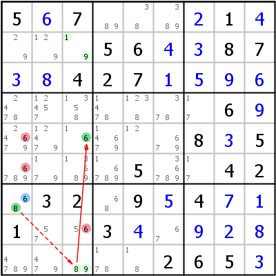

HoDoKu Lösungstechnik-Index: Beispiel für "Grouped Alternate Inference Chain Type 1 with ALS node"

Originales Sudoku:
5.7....1....56..87..427...........6.......8.5....5..42.32.9.4..1..3..........265.
Verwenden Sie die folgende Zeile um das Sudoku in HoDoKu zu laden:
:0711:6:5+67...+21+4...56+4+387+3+8427+1+5+9+6.......6+9......8+35....5..42.32.9+54+7+11..3+4.+9+2+8.....265+3::651 661 683:
Die folgende Darstellung kann per Zwischenablage in die meisten Sudoku-Programme eingefügt werden:
.---------------------.--------------------.----------. | 5 6 7 | 89 38 389 | 2 1 4 | | 29 129 19 | 5 6 4 | 3 8 7 | | 3 8 4 | 2 7 1 | 5 9 6 | :---------------------+--------------------+----------: | 2478 12457 1358 | 1478 1238 378 | 17 6 9 | | 24679 12479 169 | 14679 12 679 | 8 3 5 | | 6789 179 13689 | 16789 5 36789 | 17 4 2 | :---------------------+--------------------+----------: | 68 3 2 | 68 9 5 | 4 7 1 | | 1 57 56 | 3 4 67 | 9 2 8 | | 4789 479 89 | 178 18 2 | 6 5 3 | '---------------------'--------------------'----------'
Darstellung des Lösungsschrittes:
.------------------------.--------------------.----------. | 5 6 7 | 89 38 389 | 2 1 4 | | 29 129 A19 | 5 6 4 | 3 8 7 | | 3 8 4 | 2 7 1 | 5 9 6 | :------------------------+--------------------+----------: | 2478 12457 1358 | 1478 1238 378 | 17 6 9 | | 24-679 12479 *169 | 14679 12 679 | 8 3 5 | | -6789 179 13689 | 16789 5 36789 | 17 4 2 | :------------------------+--------------------+----------: | *68 3 2 | 68 9 5 | 4 7 1 | | 1 57 5-6 | 3 4 67 | 9 2 8 | | 4789 479 A89 | 178 18 2 | 6 5 3 | '------------------------'--------------------'----------' Grouped AIC 6- r7c1 -8- ALS:r29c3 =6= r5c3 -6 => r56c1,r8c3<>6
Copyright © 2008-12 von Bernhard Hobiger
Zuletzt geändert am 5. Mai 2025 von shorty#3746
(basierend auf dem 1to9only Github-Repo)
Alles Material auf dieser Site unterliegt der GNU FDLv1.3.